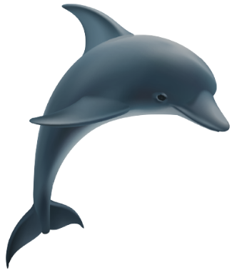

Inovação através da
educação

O que é o projeto?
O Tucuxi Valley é um projeto que surgiu entre amigos estudantes de programação para a inserção de crianças e jovens da cidade de Tefé e comunidades próximas na área de tecnologia. Acreditamos que temos jovens talentosos mas que não têm acesso a computadores e a própria informação do que se pode criar com tais equipamentos visto que a questão logistica da nossa região é bem complicada e o acesso a internet é precário.
Como irá funcionar?
A ideia é que tenhamos um espaço físico com computadores e outros equipamentos necessários ao ensino de programação. Pretendemos ensinar os jovens a programar resolvendo problemas cotidianos da nossa comunidade, acreditamos que essa é uma ótima maneira para que os mesmos fixem o conteúdo e impactem de forma positiva a nossa comunidade.
Quando o projeto irá
começar?
Até o presente momento o projeto está somente no papel e temos um grupo no whatsapp para discutirmos a ideia, que é nova já que pensamos nisso há cerca de um mês e ainda não temos conhecimentos necessários e nem os meios para transformar em realidade.